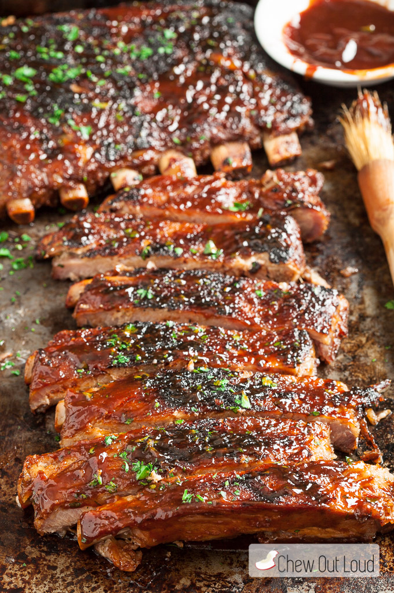

NY Strip

Description
Finest Boneless Ribs
Ingredients
- 2 pounds boneless beef short ribs
- 1 (12 ounce) bottle chili sauce
- 1 teaspoon liquid smoke flavoring
- ⅓ cup finely chopped onion
- 2 teaspoons minced garlic
- 1 tablespoon yellow mustard
- 1 tablespoon honey mustard
- 1 tablespoon Worcestershire sauce
- 2 tablespoons steak sauce
- ¼ teaspoon celery seed
- salt and pepper to taste
Steps
- Preheat oven to 350 degrees F (175 degrees C). Place ribs in a baking dish, and bake 1 hour, or to a minimum internal temperature of 160 degrees F.
- In a saucepan over medium heat, mix the chili sauce, liquid smoke flavoring, onion, garlic, yellow mustard, honey mustard, Worcestershire sauce, steak sauce, and celery seed. Season with salt and pepper. Simmer 30 minutes, stirring occasionally.
- Preheat an outdoor grill for high heat.
- Lightly oil the grill grate. Place ribs on grill. Constantly coat ribs with the sauce, and cook 15 minutes, or until nicely browned.